9 Layers
Exercises 9.2.1
9.0.1 Question 1
Create a scatterplot of hwy vs. displ where the points are pink filled in triangles.
Solution:
Code
ggplot(data = mpg, mapping = aes(displ, hwy)) +
geom_point(shape = 17, color = "pink")9.0.2 Question 2
Why did the following code not result in a plot with blue points?
Code
# Inside mapping
ggplot(mpg) +
geom_point(aes(x = displ, y = hwy, color = "blue"))Solution:
The code did not result in blue points because the
color = "blue"argument is placed inside theaes()(aesthetics) function.Inside
aes(): When you put a value inside aes(), ggplot2 treats it as a variable from your data-set. By writing color = “blue”, you essentially told R: “Create a new temporary column for this data set where every single row contains the word ‘blue’. The correct approach is to place the color argument outside of aes().
Code
# Outside of aes()
ggplot(mpg)+
geom_point(aes(x = displ, y = hwy), color = "blue")9.0.3 Question 3
What does the
strokeaesthetic do? What shapes does it work with? (Hint: use?geom_point)
Solution:
The
strokeis used to control and modify thewidthof the shapesborder.
To save you time, here it is straight away from the official documentation of
geom_point()function :For shapes that have a border (like 21), you can color the inside and outside separately.
Use the stroke aesthetic to modify the width of the border.
Code example :
If you want to create a plot with circles that have a red inside and a very thick blue border, your code would look like this:
Code
ggplot(mpg, aes(x = displ, y = hwy)) +
geom_point(
shape = 21, # Selects a shape with a border and fill
fill = "red", # Inside color
color = "blue", # Border color
size = 5, # Overall size of the point
stroke = 3 # Thickness of the blue border
)9.0.4 Question 4
What happens if you map an aesthetic to something other than a variable name, like aes(color = displ < 5)? Note, you’ll also need to specify x and y.
Solution:
Let’s run this code and see the results along with inspecting potential error messages.
Code
library(ggplot2)
ggplot(mpg, aes(x=hwy, y=cty, color=displ<5))+
geom_point()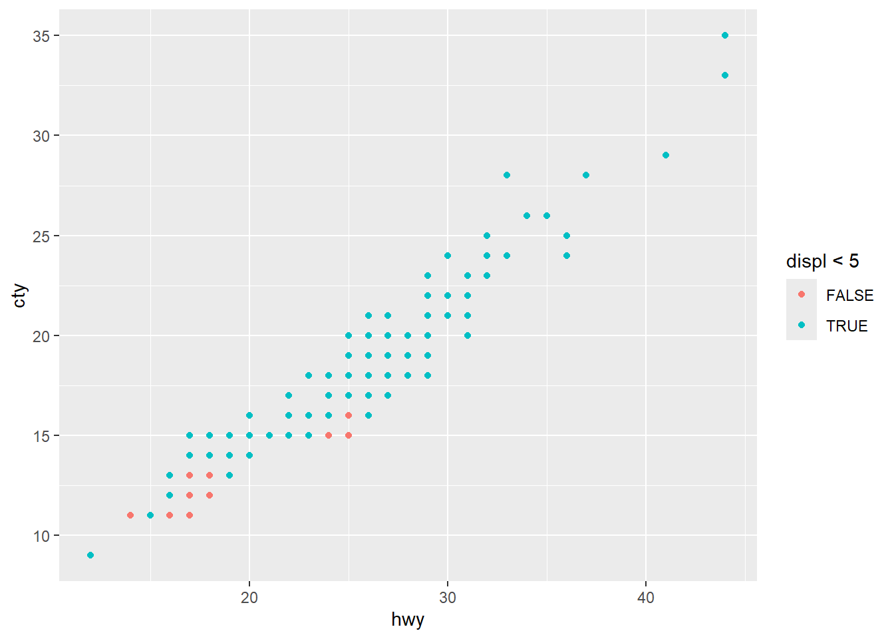
As we can see, first of all it didn’t raise any errors like we might expected. What it did is the following : it creates behind the scenes a categorical variable which takes Boolean values (
TrueorFalse) based on the condition/expression mentioned (is the observation displ value less than 5 or not ? True if yes False if not). Then it added information to the plot by coloring points where this condition is fulfilled or not.
Exercises 9.3.1
9.0.5 Question 1
What geom would you use to draw a
line chart? Aboxplot? Ahistogram? Anarea chart?
Solution:
I would use respectively :
geom_line(),geom_boxplot(),geom_histogram(),geom_area().
9.0.6 Question 2
What does
show.legend = FALSEdo here? What happens if you remove it? Why do you think we used it earlier?
Solution:
This argument was set to
FALSEtopreventthe legend fromappearing.While this is mechanically true—especially when compared to setting it to TRUE or leaving the default NA (both of which display the legend)—its purpose goes beyond that simple usage after reading the documentation.
As seen earlier in the book, the author wanted to plot three figures
side-by-side on the same lineusing the chunk options (I inspected the source code of the quarto book on Hadley github) #| layout-ncol: 3 and #| fig-width: 3. If the legend had been left visible on the last plot, it would have forced the third figure tocompressandshrinkto make room for the text. This would have resulted indistorted dimensions, making it lookasymmetrical and unappealingcompared to the other two.
9.0.7 Question 3
What does the se argument to geom_smooth() do?
Solution:
This argument, which is by default set to TRUE, displays
confidence bandaround the smooth line.
9.0.8 Question 4
Recreate the R code necessary to generate the following graphs. Note that wherever a categorical variable is used in the plot, it’s drv.
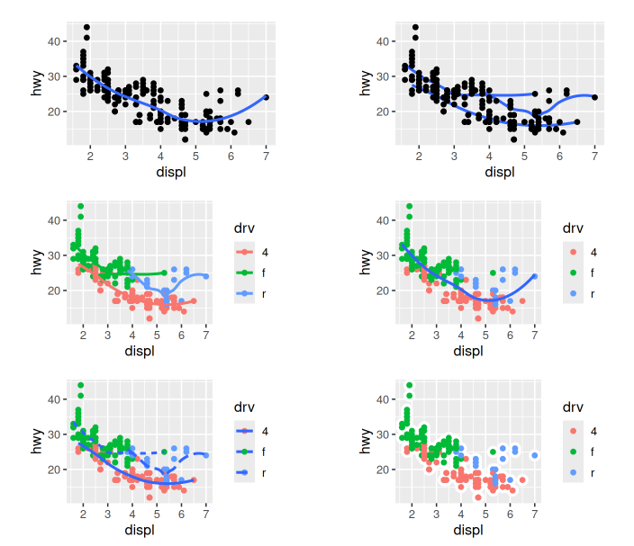
Solution:
I just want you to take a look at the
last plot(bottom right). As you may notice, there aregeom_pointwho are filled with different colors (based on the categorical variable drv) along withwhite bordersthat catche the eyes. To do so : An older trick to achieve this bordered effect was tolayertwo separate geom_point()calls (like Hadley himself did to create this plot : I was suprised by this trick yet classic and I still wonder why the white points, since their size is bigger, didn't prevent the small ones from appearing). A much cleaner, modern approach is to useshape= 21 in asingle layer. This allows you to map your data to the interior (fill) while independently defining a thick border using color = “white” and stroke.
Code
#Hadley way to generate the last plot
ggplot(mpg, aes(x = displ, y = hwy)) +
geom_point(size = 4, color = "white") +
geom_point(aes(color = drv))Below, you find the code that generates respectively the graphs shown above. Reading proceeds from top to bottom and from left to right.
Code
ggplot(data=mpg, mapping = aes(x=displ, y=hwy))+
geom_point(size = 4)+
geom_smooth(se=FALSE)
ggplot(data=mpg, mapping = aes(x=displ, y=hwy))+
geom_point(size = 4)+
geom_smooth(aes(group = drv), se=FALSE)
ggplot(data=mpg, mapping= aes(x=displ, y=hwy, color=drv))+
geom_point(size=4)+
geom_smooth(se=FALSE)
ggplot(data=mpg, mapping = aes(x=displ, y=hwy))+
geom_point(aes(color=drv),size=4)+
geom_smooth(se=FALSE)
ggplot(data=mpg, mapping=aes(x=displ, y=hwy))+
geom_point(aes(color=drv), size=4)+
geom_smooth(aes(linetype = drv), se=FALSE)
ggplot(data=mpg, mapping=aes(x=displ, y=hwy))+
geom_point(aes(fill=drv),
shape = 21, # Uses a shape with both a fill and a border
color = "white", # Forces the border to be white for all points
size = 4, # Increases the overall size of the point
stroke = 2)Exercises 9.4.1
9.0.9 Question 1
What happens if you facet on a continuous variable?
Solution:
Let’s create such an example and explore what happen
Code
ggplot(mpg, aes(x = displ, y = hwy)) +
geom_point() +
facet_wrap(~cty)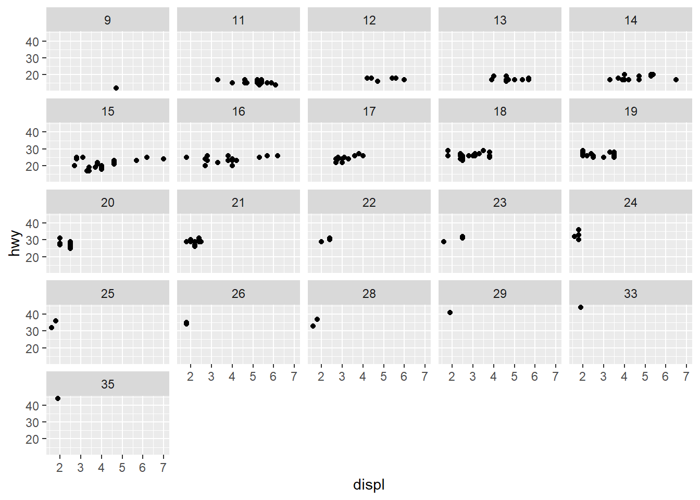
As you can see,
ggplot2treats thecontinuous variableas if it werecategorical: each facet captures a scatter plot based on asingle unique value of our numerical variable(cty). Fortunately, the mpg dataset does not contain a wide range of numerical values; otherwise, this behavior would result in hundreds, if not thousands, of separate plots.
Behind the scenes : R forces the continuous variable to behave like a categorical one.
Ultimately, it is safe to conclude that
facet_wrap()is intended to be used strictly withcategorical variables.
9.0.10 Question 2
What do the empty cells in the plot above with
facet_grid(drv ~ cyl)mean? Run the following code. How do they relate to the resulting plot?
Solution:
The empty cells simply indicate that there are no observations for the combination of those two categorical variables in those cells.
we can visualize the absence of those combinations simply by plotting those categorical variables against each other. As you can see below, the dots indicates that the data contains such a combination and the absence of it is shown by the absence of corresponding points in the plot.
Three empty cells in the plot above are shown with its origin in the plot below.
Code
ggplot(mpg) +
geom_point(aes(x = drv, y = cyl))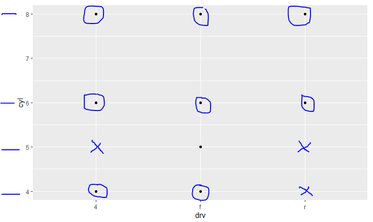
9.0.11 Question 3
What plots does the following code make? What does
.do?
Solution:
In ggplot2, the
facet_grid()function uses a formula to decide how to physically arrange the grid of plots. The standard formula syntax is:rows ~ columns. The.in the formula indicates that the data should not be split by that variable, meaning the plots will be arranged in a singlerow/columnrespectively for each unique value ofdrv/cylwithout creating additionalcolumns/rows.
Code
ggplot(mpg) +
geom_point(aes(x = displ, y = hwy)) +
facet_grid(drv ~ .) # Create a separate row for every unique value of drv
# but do not split them into multiple columns.
ggplot(mpg) +
geom_point(aes(x = displ, y = hwy)) +
facet_grid(. ~ cyl) # Do not split the data across rows,
# but create a separate column for every unique value of cyl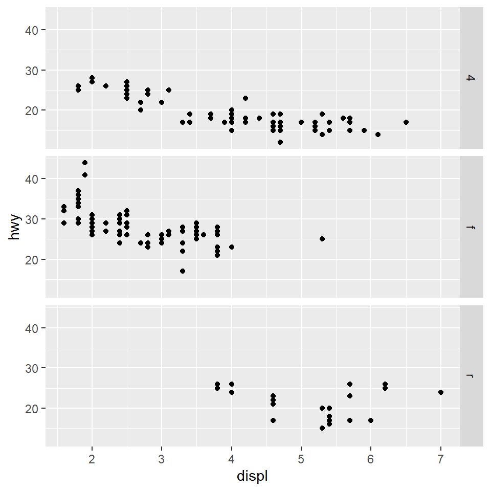
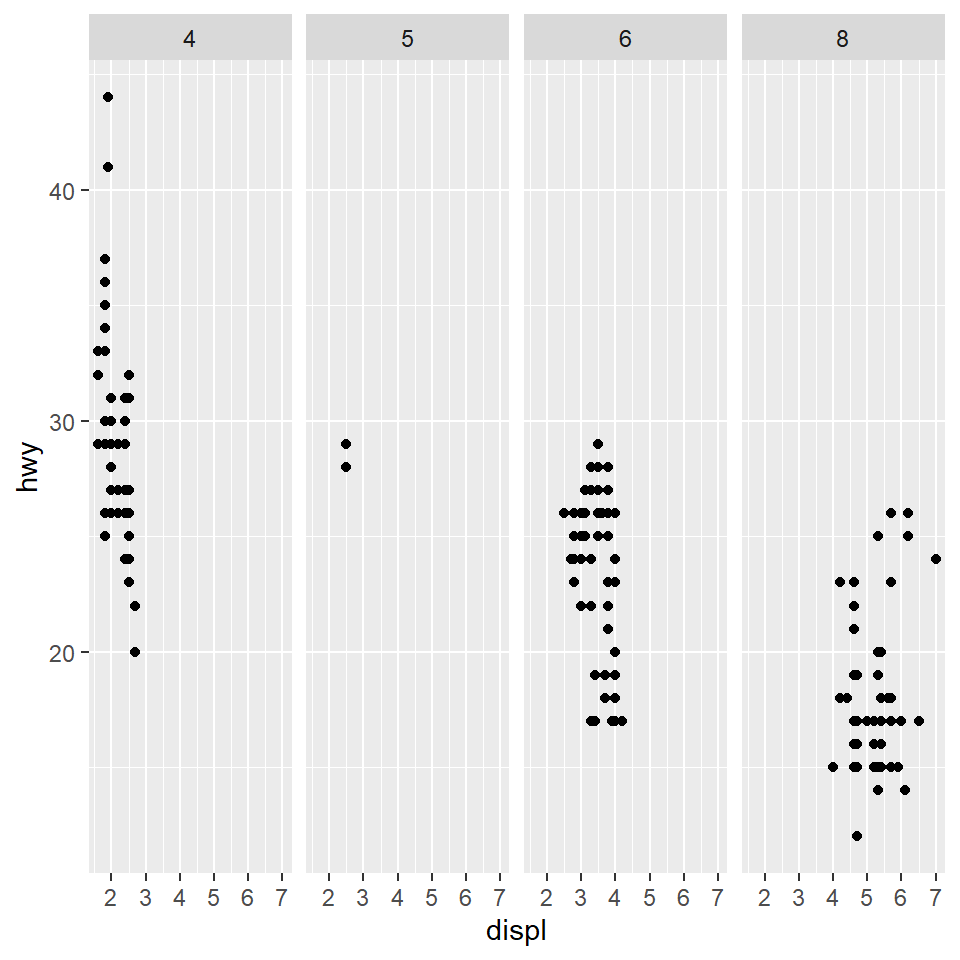
9.0.12 Question 4
What are the advantages to using faceting instead of the color aesthetic? What are the disadvantages? How might the balance change if you had a larger dataset?
Solution:
Faceting can make it easier to compare distributions across categories when there are many levels, as it avoids overcrowding the plot with colors. It can also improve readability by separating data into distinct panels. However, faceting can become less effective when there are too many categories, leading to very small or empty panels. With a larger dataset, faceting might become more practical as it can help manage complexity, while color aesthetics might become less effective due to limited color differentiation.
9.0.13 Question 5
Read
?facet_wrap. What doesnrowdo? What doesncoldo? What other options control the layout of the individual panels? Why doesn’tfacet_grid()have nrow and ncol arguments?
Solution:
In
facet_wrap(), thenrowandncolarguments allow you to manually define the number of rows and columns to organize your plots, while other options likedir(direction) orstrip.position(label placement) further refine this layout.
In contrast,
facet_grid()does not have these arguments because its grid dimensions are strictly dictated by the data itself: it is the number of unique values contained in the crossed variables that mathematically imposes the number of rows and columns in the matrix, making any manual adjustment impossible and contradictory.”
9.0.14 Question 6
Which of the following plots makes it easier to compare engine size (displ) across cars with different drive trains? What does this say about when to place a faceting variable across rows or columns?
Code
# facet 1
ggplot(mpg, aes(x = displ)) +
geom_histogram() +
facet_grid(drv ~ .)
# facet 2
ggplot(mpg, aes(x = displ)) +
geom_histogram() +
facet_grid(. ~ drv)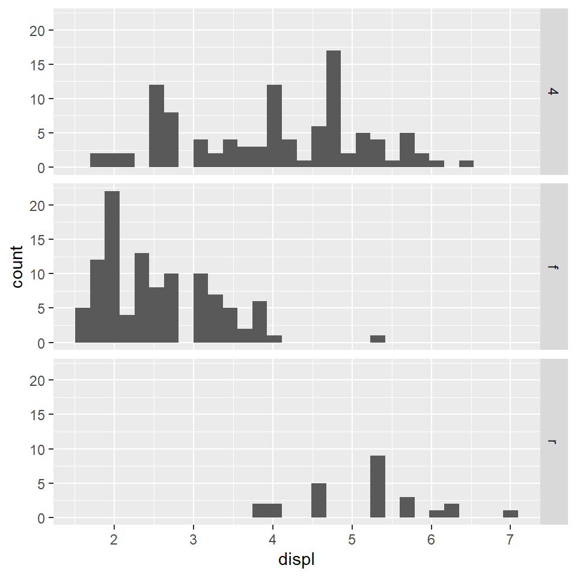
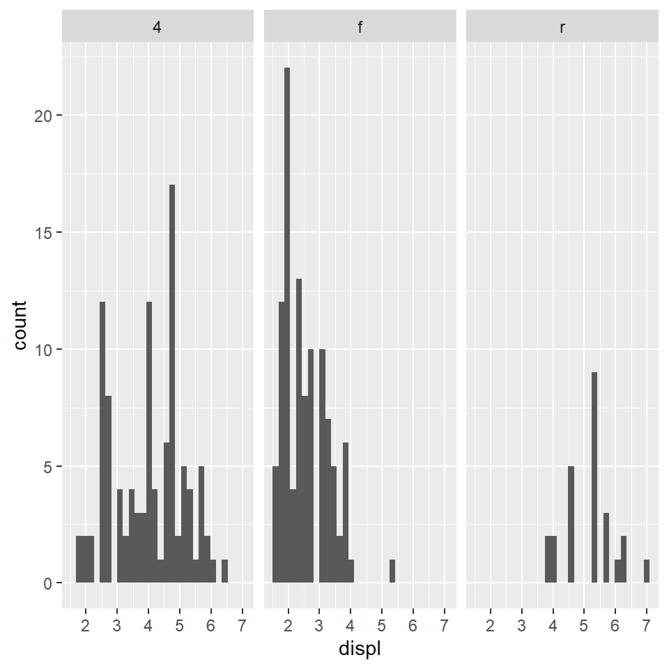
Solution:
As you can notice, when we arrange the three histogram in the same column ggplot defines a single
x-axisshared across those plots, which makes it easier to compare engine size (displ) across cars with different drive trains. The second plot makes it harder to do so because the x-axis is not shared across the plots therefore you need to go back and forth between the histograms when you set on your mind a range de values to be compared acrossdrvvalues.
9.0.15 Question 7
Recreate the following plot using facet_wrap() instead of facet_grid(). How do the positions of the facet labels change?
Code
# the original plot
ggplot(mpg) +
geom_point(aes(x = displ, y = hwy)) +
facet_grid(drv ~ .)
# recreating the plot with facet_wrap()
ggplot(mpg) +
geom_point(aes(x = displ, y = hwy)) +
facet_wrap(~drv, nrow = 3)
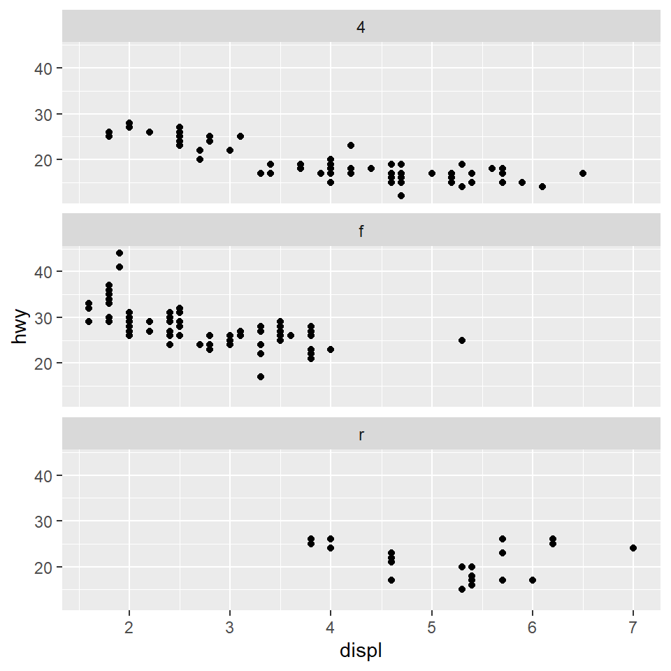
Solution:
As you can notice the facet labels change position from the right to the top of each graph.
Exercises 9.5.1
9.0.16 Question 1
What is the default geom associated with
stat_summary()? How could you rewrite the previous plot to use that geom function instead of the stat function?
Solution:
When you type
?stat_summaryin your console and look at the Usage section at the very top of the help page, you will see the default arguments listed inside the function. It looks like this: stat_summary(mapping = NULL, data = NULL, geom = “pointrange”, …) That geom = “pointrange” is the secret hiding in plain sight!
Because geoms and stats are partners, you can flip the script. Instead of using the
statfunction and letting it call the defaultgeom, you can use thegeomfunction and tell it to use a specificstat.
Code
ggplot(diamonds, aes(x = cut, y = depth)) +
geom_pointrange(
stat = "summary",
fun.min = min,
fun.max = max,
fun = median
)9.0.17 Question 2
What does
geom_col()do? How is it differentfrom geom_bar()?
Solution:
Since the documentation perfectly responds to this question I am pasting the description section of the documentation. It comes as follows :
There are two types of bar charts:
geom_bar()andgeom_col(). geom_bar() makes the height of the barproportional to the number of cases in each group. If you want the heights of the bars torepresent values in the data, use geom_col() instead. geom_bar() uses stat_count() by default: it counts the number of cases at each x position. geom_col() uses stat_identity(): itleaves the data as is.
9.0.18 Question 3
Most geoms and stats come in pairs that are almost always used in concert. Make a list of all the pairs. What do they have in common?
Solution:
- geom_bar() \(\leftrightarrow\) stat_count()
- geom_histogram() / geom_freqpoly() \(\leftrightarrow\) stat_bin()
- geom_boxplot() \(\leftrightarrow\) stat_boxplot()
- geom_smooth() \(\leftrightarrow\) stat_smooth()
- geom_density() \(\leftrightarrow\) stat_density()
- geom_violin() \(\leftrightarrow\) stat_ydensity()
- geom_contour() \(\leftrightarrow\) stat_contour()
- geom_bin2d() \(\leftrightarrow\) stat_bin2d()
- geom_hex() \(\leftrightarrow\) stat_bin_hex()
- geom_qq() \(\leftrightarrow\) stat_qq()
- geom_function() \(\leftrightarrow\) stat_function()
- geom_sf() \(\leftrightarrow\) stat_sf()
If you read through the documentation (for example, typing
?geom_smoothor?geom_boxplot), you will notice two major things they all share:
Shared Documentation Pages. The same documentation page is used for both the geometry and the statistic : They are so deeply connected that they do not even have separate help files. Running ?geom_smooth and ?stat_smooth brings up the exact same documentation page.
Reciprocal Defaults. They act as default values for one another. If you use geom_smooth(), its default statistical transformation is automatically stat = “smooth”. If you use stat_smooth(), its default geometric representation is automatically geom = “smooth”.
9.0.19 Question 4
What variables does stat_smooth() compute? What arguments control its behavior?
Solution:
When using stat_smooth(), the function computes four key variables behind the scenes: the predicted trend line (y), the standard error (se), and the lower and upper bounds of the confidence interval (ymin and ymax). You can precisely control how this line is calculated and drawn using several arguments, most notably method (to choose the statistical model, like “loess” or “lm”), formula (to define the mathematical relationship), and span (to adjust the “wiggliness” of loess curves). Furthermore, you can manage the visual output by toggling the confidence band with the se argument, adjusting its statistical certainty via level, and using fullrange to dictate whether the line stops with the data or extends across the entire plot area.
9.0.20 Question 5
In our proportion bar chart, we needed to set
group = 1. Why? In other words, what is the problem with this graph ?
SOlution:
Code
# Because there is no group = 1, ggplot2 calculates the proportion
# of "Fair" diamonds relative only to the "Fair" diamonds.
# Result: Every single bar ("Fair", "Good", "Premium", etc.) will
# be drawn at exactly 1.0 (100% height). All bars will be the same
# height, which tells you nothing about the data-set.
ggplot(diamonds, aes(x = cut, y = after_stat(prop), group = 1)) +
geom_bar()Exercises 9.5.1
9.0.21 Question 1
What is the problem with the following plot? How could you improve it?
Solution:
The problem with left graph is the same that was mentioned earlier in the book :
Overplotting. The graph represents less points than the number of observations in the data. Let’s take for example, the point circled in blue. in the left plot, it seems like a single point that corresponds to a single observation, but the in factisNOT!
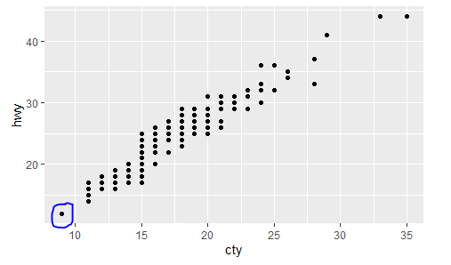
If we dig deeper into our data and inspect the pair of values of this point (cty==9 & hwy==12), we find out that there are multiple observations with the same cty and hwy values (
in fact 5 observations), which is why the point appears as a single observation in the plot.
Code
library(tidyverse)
mpg |>
filter(cty==9) |>
select(manufacturer, model, cty, hwy)To improve the plot for
large scale purposes, we could use a technique like jittering to better visualize the density of points.
Code
# left
ggplot(mpg, aes(x = cty, y = hwy)) +
geom_point()
# middle
ggplot(mpg |> filter(cty==9), aes(x = cty, y = hwy)) +
geom_point()
# right
ggplot(mpg, aes(x = cty, y = hwy)) +
geom_jitter()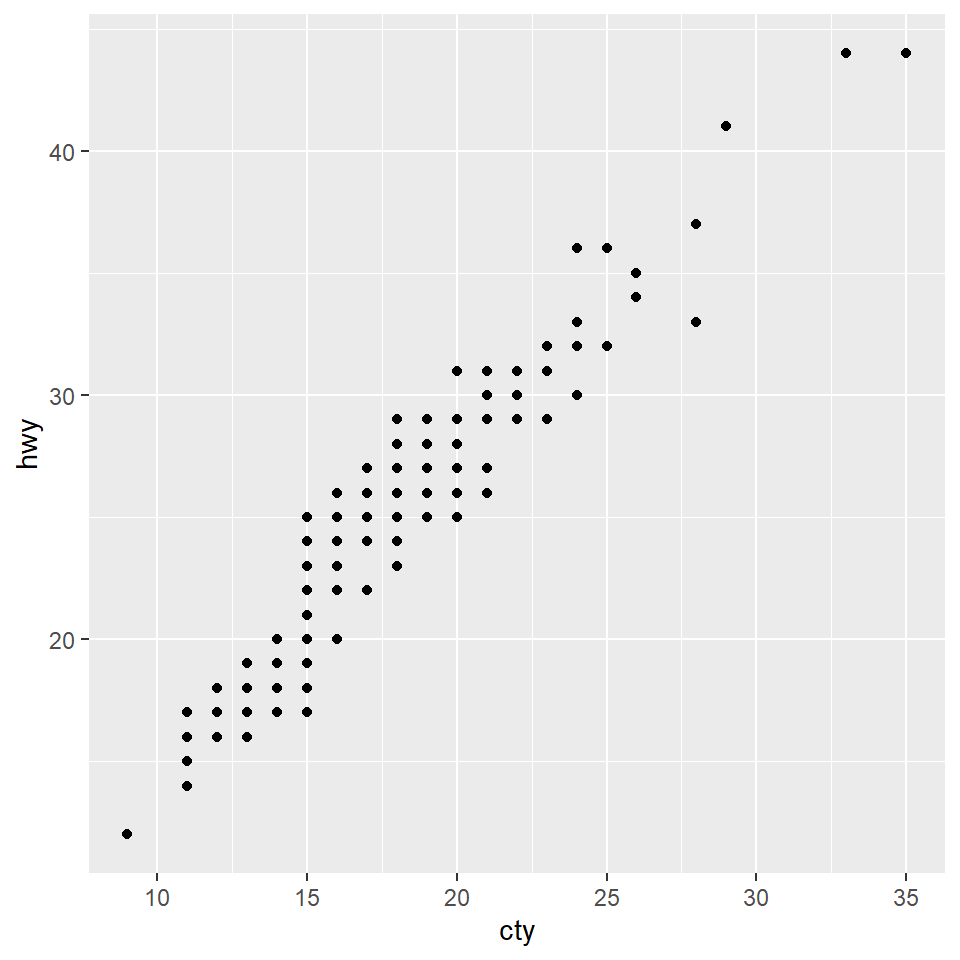
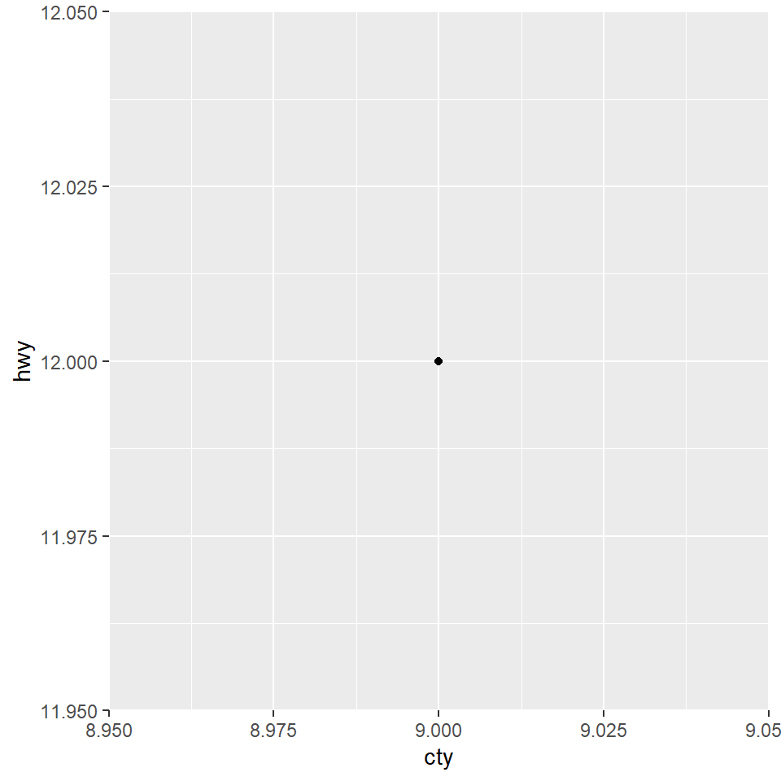
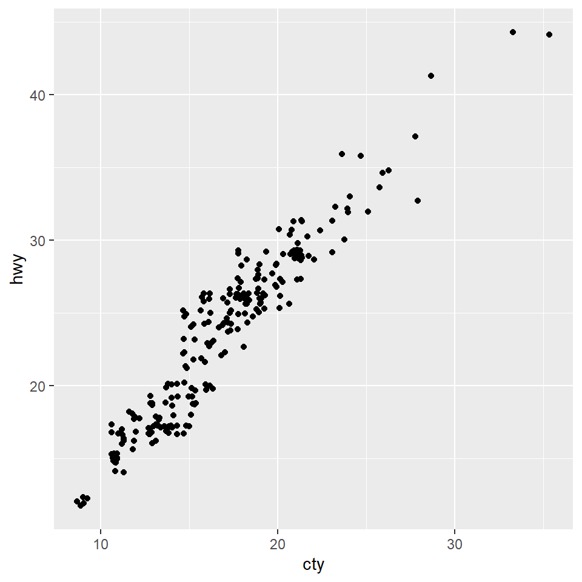
9.0.22 Question 2
What, if anything, is the difference between the two plots? Why?
Code
ggplot(mpg, aes(x = displ, y = hwy)) +
geom_point()
ggplot(mpg, aes(x = displ, y = hwy)) +
geom_point(position = "identity")Solution:
The default value of the argument
positionis “identity”. Therefore, the two graphs are identical. Setting position to"identity"tells ggplot to draw points exactly where they are.
9.0.23 Question 3
What parameters to
geom_jitter()control the amount of jittering?
Solution:
By default, ggplot2 adds a small amount of noise in both directions. However, you can manually set these values to precisely control how far the points are allowed to scatter. The amount of jittering in
geom_jitter() is controlled by two specific arguments:widthandheight.
9.0.24 Question 4
Compare and contrast geom_jitter() with geom_count().
Solution:
This is my first time using
geom_count() with numerical variables and, honestly, I was expecting an error message but I was surprised by how useful it is here.Hidden overplotting in plain sight!
To compare and contrast them: Both
geom_jitter() andgeom_count() are tools used to resolve overplotting. However, they use entirely different aesthetics to do so. While geom_jitter() addsrandom spatial noise(altering point position) to spread overlapping data out, geom_count()maintains exact coordinates but maps the frequency of the overlaps to point size.
Code
ggplot(mpg, aes(x = cty, y = hwy)) +
geom_count()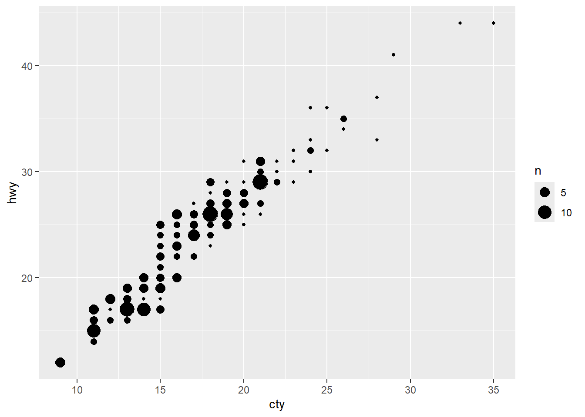
9.0.25 Question 5
What’s the default position adjustment for geom_boxplot()? Create a visualization of the mpg dataset that demonstrates it.
Solution:
The default position adjustment for
geom_boxplot() is"dodge2".
When you introduce a second grouping variable to your plot (like fill or color), “dodge2” tells ggplot2 to place the resulting boxplots
side-by-siderather thanstacking them on top of each other.
Code
# Demonstrating the "identity" position : left
ggplot(mpg, aes(x = class, y = hwy, color = drv)) +
geom_boxplot(position = "identity")
# Demonstrating the default "dodge2" position : right
ggplot(mpg, aes(x = class, y = hwy, color = drv)) +
geom_boxplot()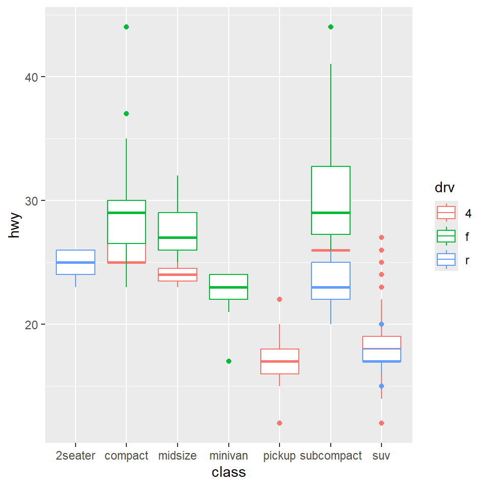
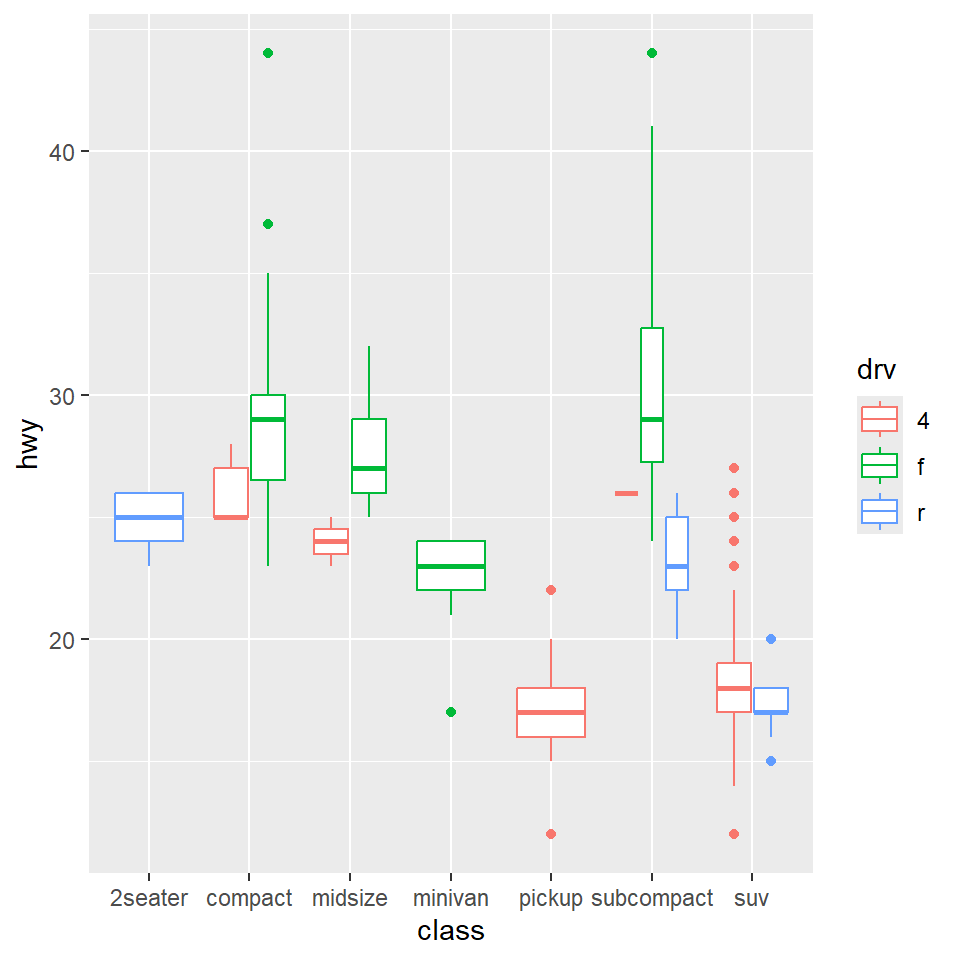
Exercises 9.7.1
9.0.26 Question 1
Turn a stacked bar chart into a pie chart using coord_polar().
Solution:
Code
ggplot(mpg, aes(x = drv, fill = class)) +
geom_bar(position = "fill") +
coord_polar()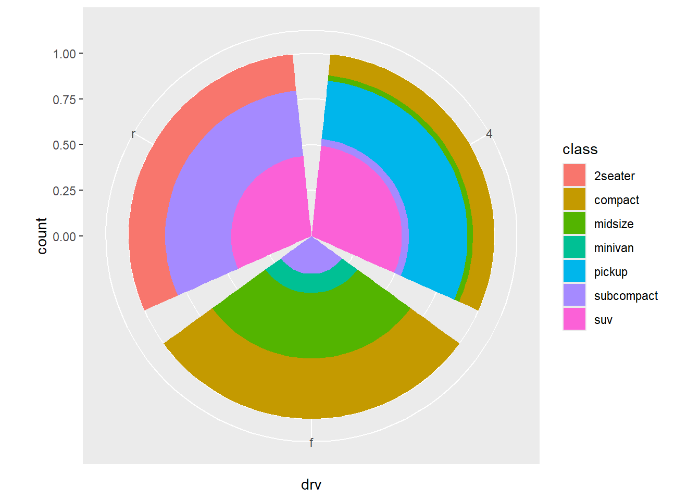
9.0.27 Question 2
What’s the difference between coord_quickmap() and coord_map()?
Solution:
- coord_map() performs strictly accurate mathematical projections of the spherical Earth onto a flat 2D plane (using the mapproj package). It is highly accurate, but it requires more complex calculations, making it computationally heavy and slow to render.
- coord_quickmap() uses a fast approximation that assumes the Earth is flat within your specific plot area. It simply adjusts the aspect ratio based on the center latitude, making it much faster to render and requiring no extra packages, though it is slightly less accurate for very large global maps.
9.0.28 Question 4
What does the following plot tell you about the relationship between city and highway mpg? Why is
coord_fixed() important? What doesgeom_abline() do?
Solution:
The plot reveals a strong, positive linear relationship, with almost all points sitting above the reference line to indicate that highway mileage is consistently higher than city mileage. The
geom_abline() function provides this visual benchmark by drawing a default identity line (\(y = x\)). Finally,coord_fixed() is essential because it forces a strict 1:1 aspect ratio; this ensures that one unit on the x-axis is physically identical to one unit on the y-axis, preventing the 45-degree reference line from being stretched or visually distorted by the dimensions of the plotting window.
Code
# left
ggplot(data = mpg, mapping = aes(x = cty, y = hwy)) +
geom_point() +
geom_abline() +
coord_fixed()
# right
ggplot(data = mpg, mapping = aes(x = cty, y = hwy)) +
geom_point() +
geom_abline()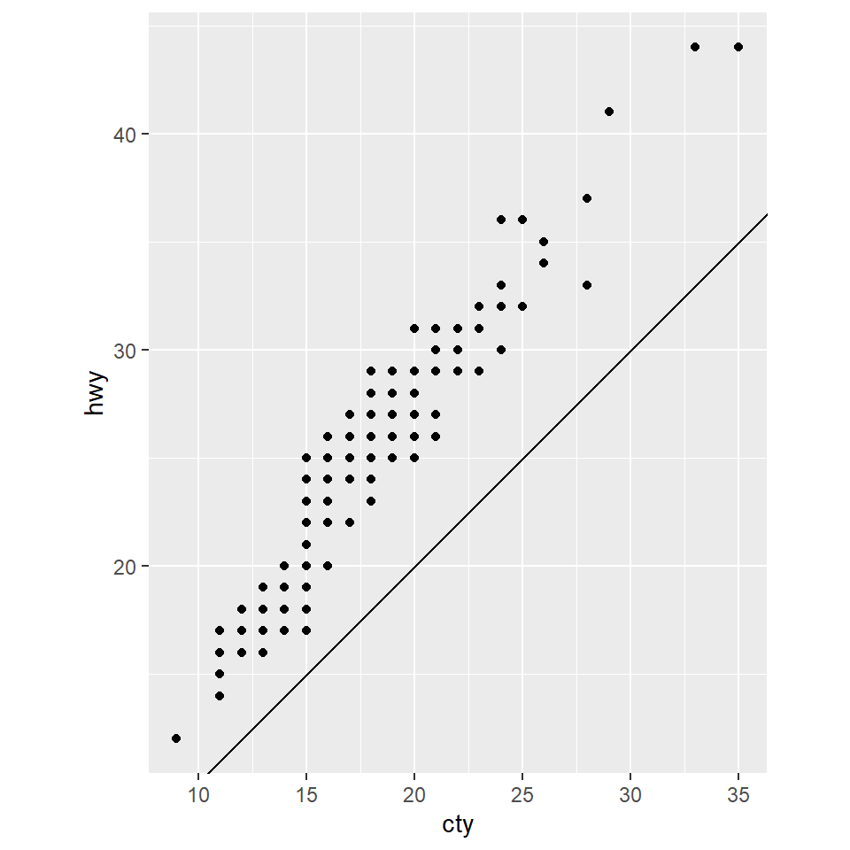
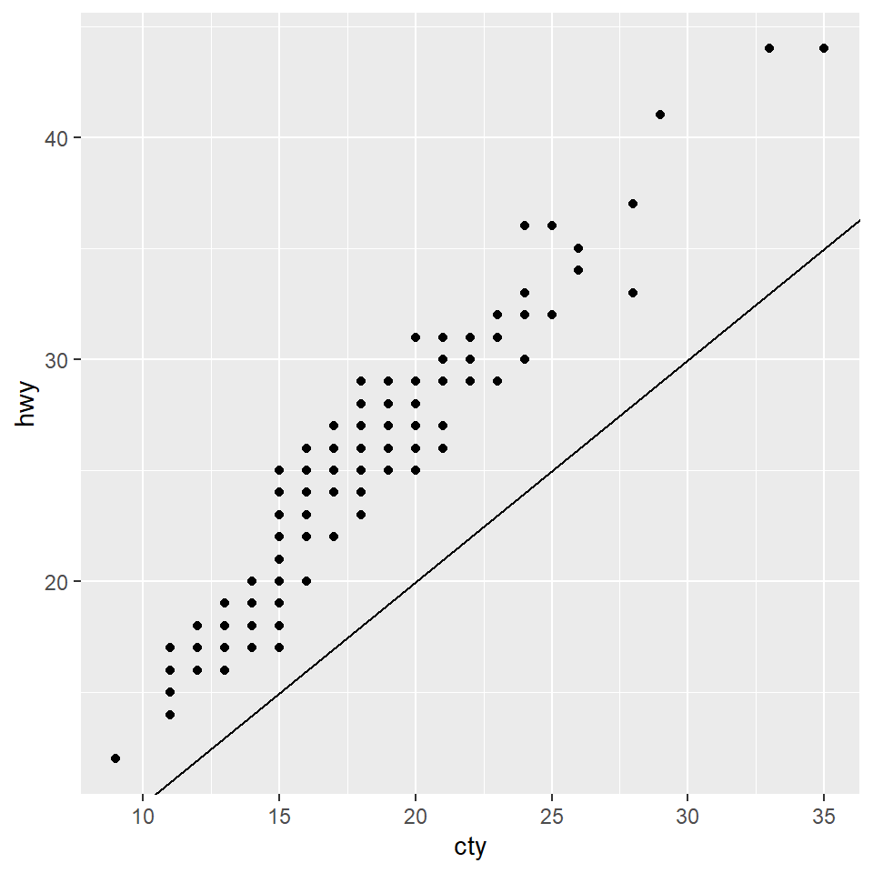